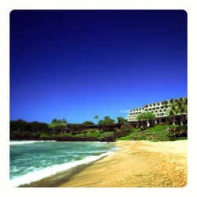

May 3, 2014 • Big Island, Hawaii
We can't wait to celebrate in the aloha spirit with all of you. Here you'll find information on the wedding, how to get to Hawaii, and where to stay. We'll continue to update the site with more info as we go, so check back from time to time to see what's new.
Mahalo,
Kyle & Liz
The Main Event
Anna Ranch Heritage Center
65-1480 Kawaihae Road
Waimea, HI 96743
We recommend looking at accommodations in the Kohala Coast area—from Waikaloa to Hawi. In Waikaloa, which is a bit farther from the wedding venue, there are a number of accommodation options, including the Waikoloa Beach Marriott Resort & Spa, the Hilton Waikaloa Village and the Outrigger Fairway Villas.
There are two hotel options closer to the wedding venue in Waimea: the Mauna Kea Beach Resort and the Hapuna Beach Prince Hotel. The hotels are sister properties—located next to each other—and are approximately 40 minutes from the airport.
Discounted rates are available for our wedding guests at both the Mauna Kea Beach Hotel and the Hapuna Beach Prince Hotel for the room types listed below.
Mauna Kea Beach Hotel
62-100 Mauna Kea Beach Drive
Kohala Coast, Hawaii 96743
Room types:
Hapuna Beach Prince Hotel
62-100 Kauna'oa Drive
Kohala Coast, Hawaii 96743
Room types:
To book at either the Mauna Kea or the Hapuna Prince, call 1-866-PRINCE-6 (1-866-774-6236) and ask for the Kotin/Crouse wedding guest rates when booking. Complimentary self-parking will be extended to all wedding guests.
If you planning on an extended vacation, you may want to consider renting a condo. We recommend searching the Kohala Coast area on AirBnB or VRBO to find the best deals.
Kona International Airport at Keahole
KOA Kailua-Kona
73-200 Kupipi Street
Kailua-Kona, HI 96740-2645
A number of airlines provide direct flights from the continental US to KOA. Check the airport website to find your most convenient option.
Once you've picked up your rental car from the Kona airport, follow these directions to find the Mauna Kea and Hapuna Prince hotels:
...for Mauna Kea Beach Hotel only:
...for Hapuna Beach Prince Hotel only: